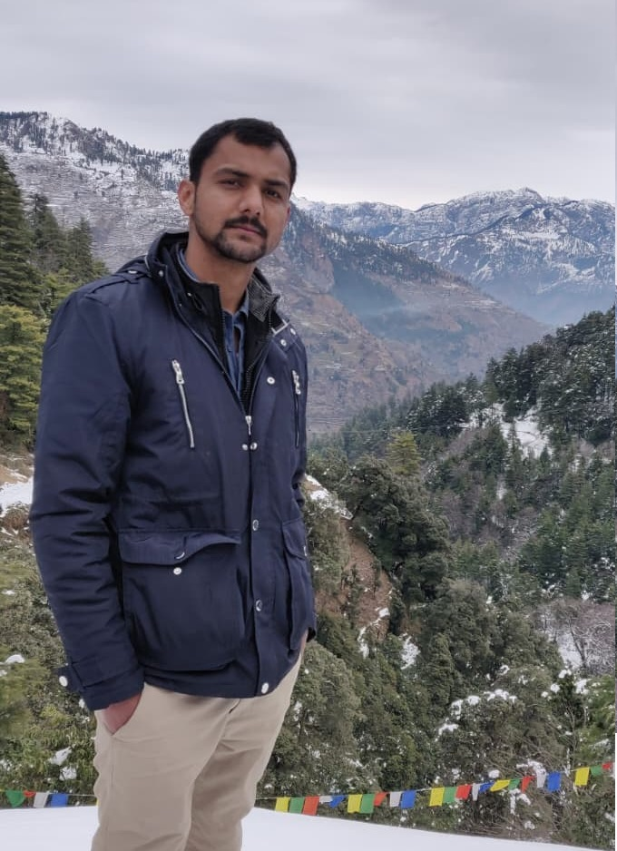

Ayush Kumar Tiwari
I am a PhD scholar working in computational solid mechanics with a focus on the progressive damage behaviour of FRP composites, continuum damage mechanics, phase-field and implicit gradient regularisation, and constitutive modelling for anisotropic materials. My current work combines microscale mechanisms, thermodynamic consistency, and finite element implementation for predictive modelling.
My broader interests include multiscale homogenisation, operator learning for computational mechanics, user subroutine development in Abaqus, and physically grounded constitutive frameworks for composite failure, plasticity, and fracture.
Progressive damage in FRP composites
Phase-field and gradient regularisation
Constitutive modelling
Scientific computing
Thermodynamically consistent elastoplastic phase-field fracture model for micromechanical analysis of fibre-reinforced polymer composites
Sagar, S., Tiwari, A. K., & Chowdhury, S. R. (2025). Thermodynamically consistent elastoplastic phase-field fracture model for micromechanical analysis of fibre-reinforced polymer composites. Composite Structures, 357, 118908.
View ArticleField, experimental and numerical study for landslide mitigation in Himachal Pradesh, India: Case study
Tiwari, A. K., Sana, E., Kumar, A., & Uday, K. V. (2025). Field, experimental and numerical study for landslide mitigation in Himachal Pradesh, India: Case study. Bulletin of Engineering Geology and the Environment, 84, 186.
View ArticleBehavior of laterally loaded mono-piled raft foundation in sloping ground
Kumar, A., Kumar, S., & Kumar, A. (2022). Behavior of laterally loaded mono-piled raft foundation in sloping ground. In K. R. Reddy, R. K. Pancharathi, N. G. Reddy, & S. R. Arukala (Eds.), Advances in Sustainable Materials and Resilient Infrastructure. Springer Transactions in Civil and Environmental Engineering, Springer, Singapore.
View Chapter